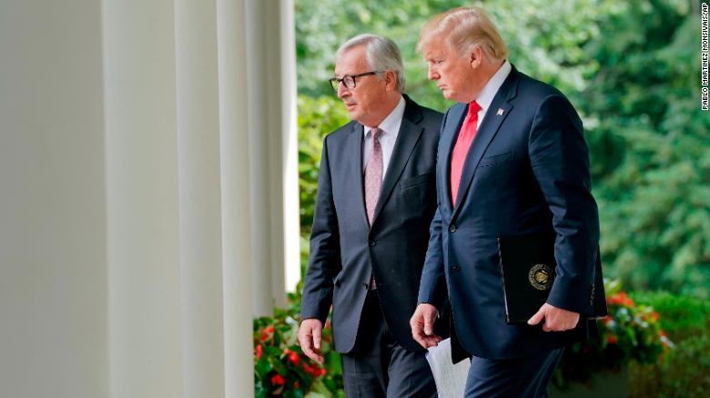
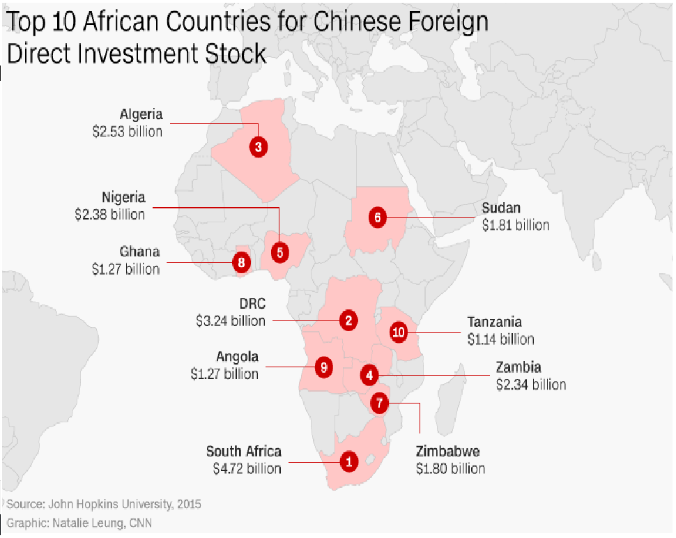
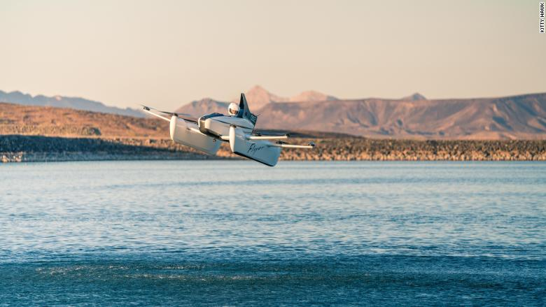
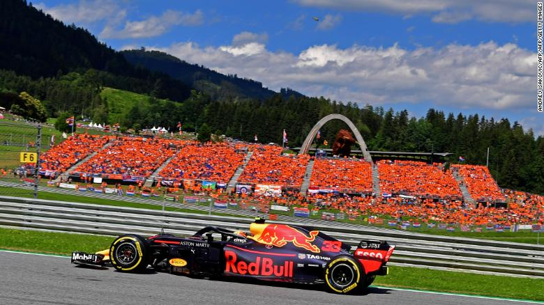
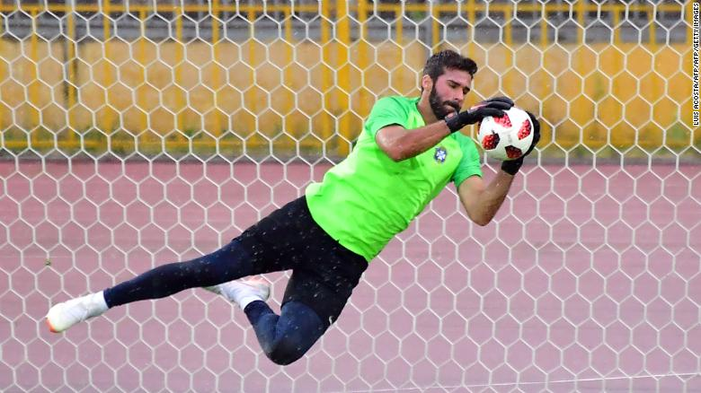
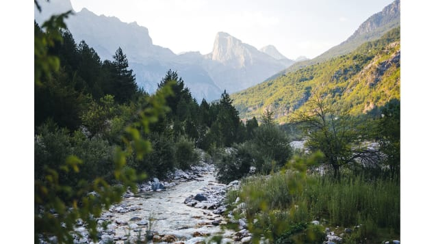

Trump and top European leader agree to work toward zero tariffs
Washington President Donald Trump said Wednesday that he and European Commission President Jean-Claude Juncker agreed to work toward eliminating tariffs and barriers on trade, reducing tensions for now in a brewing trade war. It was essentially a deal to make a deal, announced in celebratory fashion during an previously unannounced appearance in the White House Rose Garden. Trump declared it a "very big day for free and fair trade" with Juncker by his side. It was a cheery end to talks Trump himself suggested this week would be acrimonious. The US and the EU have been lobbing new tariffs on products since Trump announced earlier this year tough new levies on steel and aluminum exports. Recently, Trump has threatened a 25% tariff on European autos, a warning that seems to have been staved off. "We agreed today, first of all, to work together toward zero tariffs, zero non-tariff barriers and zero subsidies on non-auto industrial goods," Trump said. Trump indicated both sides agreed to halt for now tariffs that threatened to devolve into a trade war as negotiations proceed, and said the EU agreed to import more US soybeans and liquid natural gas.
Russia's navy parade: Big show but how much substance?
The Russian Navy frigate Admiral Gorshkov, second left, sails with other warships in rehearsal for Sunday's Navy Day parade in St. Petersburg.
Russia put on a show of its naval might Sunday, sending 40 warships through waters near St. Petersburg in a display that promises to be strong on optics but one that may mask key weaknesses. This year's version of the country's annual Navy Day parade was expected to feature the first public appearance of Russia's new stealth frigate, the Admiral Gorshkov. The 4,500-ton warship is the lead ship of six of the type planned to become part of the Russian fleet by 2025, the state-run news agency Tass reported. However, Tass said the Gorshkov and 11 other vessels were too big to sail into the Neva River, where the main part of the parade took place, and that President Vladimir Putin had instead greeted their crews at Kronshtadt, St. Petersburg's seaport, where they anchored in parade formation.
Xi Jinping heads to Africa to clinch China's hold over the continent
Beijing, China Chinese President Xi Jinping heads to Africa this week as Beijing moves to further cement its role as one of the continent's closest economic and diplomatic allies. After a brief stop in the Persian Gulf Thursday, Xi's itinerary -- his first overseas trip since beginning his second term as leader -- takes him to Senegal, Rwanda, South Africa and Mauritius, spanning almost every corner of Sub-Saharan Africa, where China's economic clout, and strategic ambitions, are growing by the year. China is Africa's largest trading partner, overtaking the United States nearly a decade ago. Bilateral trade reached a record-high of $220 billion in 2014, official statistics show. Chinese leaders have always made a point of visiting African nations regularly and early during their time in power. When he assumed the presidency in 2013, Xi also chose Africa as part of his maiden journey abroad and went on to visit the continent two more times during his first term. China's interest in Africa isn't just about trade, the continent also provides a large amount of raw materials which China couldn't get otherwise, while also acting as a pro-China political bloc at the United Nations.
We took an exclusive ride in a flying car
"It's as easy to use as playing Minecraft," Kitty Hawk CEO Sebastian Thrun said as we watched my colleague Rachel Crane pull on a motorcycle helmet. Rachel and I had just flown into Las Vegas for an exclusive first look at the Silicon Valley single-seat flying machine, Flyer. Kitty Hawk, funded by Google cofounder Larry Page and led by Thrun, a self-driving car pioneer, attracted nationwide attention when it teased its Flyer prototype last year. But now Rachel was suiting up to become the first reporter to take flight in a new, sleeker model -- no pilot license required. Expectedly, she was nervous and I was relieved it wasn't me sitting in the pilot's seat. The 250-pound vehicle resembles a cross between a drone and a pontoon plane. Ten propellers twirled around her as I watched from 50 feet away.
Daniel Ricciardo: 'This year's F1 champion will feel more fulfilled'
He may be some way off the Championship leaders but Daniel Ricciardo believes this year's F1 title race is the most exciting it's been for years. As the season nears its halfway stage and the teams take a collective deep breath following the sport's first-ever triple header, the Red Bull driver finds himself in fourth place, 65 points behind Ferrari's Sebastian Vettel.The Australian knows the odds are firmly stacked against him bridging the gap, particularly when he and teammate Max Verstappen "take too many points away from each other." But equally he believes the days of one team dominating are over, and that can only be a good thing for a sport.
Liverpool signs Brazilian goalkeeper Alisson from Roma for $84 million
Brazil international Alisson has joined Liverpool from Roma in an $84 million transfer -- a world record deal for a goalkeeper. "In terms of my life and my career, it's a huge step for me being part of this club and this family," the 25-year-old Alisson told the Liverpool website after signing a reported six-year contract. "You can be certain that I'll give my all."The transfer makes the Brazilian the most expensive goalkeeper in history, his fee eclipsing the $62 million Juventus paid to Parma in 2001 for Gianluigi Buffon and the $46 million Ederson cost Manchester City from Benfica last summer.
Novak Djokovic breezes past Kevin Anderson to win fourth Wimbledon title
Novak Djokovic celebrates during his win over Kevin Anderson
Roger Federer and Rafael Nadal dominated men's grand slam tennis in the last year and a half. But now Novak Djokovic is set to end their duopoly once again, just like he did in 2011 when the Serb truly became a sustainable threat to the tennis behemoths.Djokovic might not ever return to his halcyon days of winning four straight majors but his 6-2 6-2 7-6 (7-3) win over a drained Kevin Anderson in the Wimbledon final watched by Prince William and the Duchess of Cambridge Kate Middleton is a sure sign the 31-year-old's comeback from two years in the abyss -- by his standards -- is complete. The lone resistance Djokovic encountered Sunday as the score suggested came in the third set, when he saved five set points on his serve in two different games, producing first serves on each of them. Again.
LGCT Berlin: Fourth time lucky for Alberto Zorzi
Alberto Zorzi had narrowly missed out on victory three times this season before finally winning in Berlin.
It was fourth time lucky for Alberto Zorzi, who secured his first win of the season at the Berlin leg of the Longines Global Champions Tour (LGCT). Zorzi, of Italy, had finished on the podium three times during the 16 legs of the Tour season so far. But he finally triumphed in Saturday's eight-horse jump-off in Berlin's Sommergarten.Zorzi, 29, started riding at the age of nine. He currently trains at Stal Tops in Valkenswaard, the Netherlands, which is owned by LGCT founder and president Jan Tops. "Alberto had his day, everything went for him," said Tops, who won team gold with the Dutch team at the 1992 Barcelona Olympics. "He was hard to beat for any rider."Zorzi and his Belgian-bred mare, Fair Light van T Heike, produced a clear round in a winning time of 35.53 seconds, or 1.1 seconds faster than Germany's Christian Ahlmann and Clintrexo Z, and more than two seconds ahead of Belgian's Pieter Devos and Claire Z, who finished in third place. "Alberto was really, really quick and I tried to do my best," Ahlmann told reporters. "At the end, in the jump-off to the last fence, I lost my left stirrup and I had to do one [stride] extra. Maybe had the possibility to win at the end."
Photographer Johan Lolos captures Europe's most beautiful mountains
Europe is home to some incredible landscapes -- from the vast splendor of the Alps to the volcanic terrain of Iceland. These spectacular destinations are just some of the highlights of Johan Lolos' new book "Peaks of Europe" -- a photographic essay documenting mountains across his home continent. Belgium-born Lolos has traveled the world, but in 2017 he decided to work a little closer to home. "After three years of intense travel, I just realized that maybe I should try and focus more on my own continent," he tells CNN Travel. "Europe had a lot to offer, lots of varied landscapes."